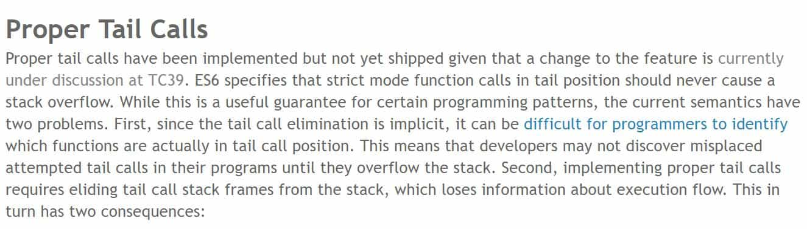

STC 与 PTC
要讲 STC 与 PTC ，则要从“尾递归”先开始说起，相信递归调用大家应该都很熟悉，递归就是指在一个函数内部再次调用该函数本身。那么尾递归从形式上来看就可以理解为在一个函数内部的“最后一行语句”中调用自己。
一、尾递归：
递归调用，比如斐波那契数列：1、1、2、3、5、8 … 总结之后我们可以发现一个规律 F(N) = F(N-1) + F(N-2) (N 不等于1和2)。因此一个常用的求斐波那契数列第 N 项值的函数便诞生如下：
function fibonacci(n) {
if (n <= 0) {
return 0;
} else if (n === 1) {
return 1;
}
return fibonacci(n - 1) + fibonacci(n - 2)
}
为什么不合适的递归会造成堆栈溢出呢？因为递归在每一次调用自身时都会保留上一层调用的环境参数（局部变量、返回地址入口等），如果递归层数太多就会造成堆栈段内存溢出。比如对于上述的斐波那契数列计算函数，我们举例 fibonacci(4)，其堆栈大致示意图如下：
fibonacci(4)
fibonacci(3) + fibonacci(2)
fibonacci(2) + fibonacci(1) + fibonacci(1) + fibonacci(0)
fibonacci(1) + fibonacci(0) + 1 + 1 + 0
1 + 0 + 1 + 1 + 0
下面给出一个求斐波那契数列第 N 项值函数的尾递归版本：
function fibonacci(n, num1 = 1, num2 = 1) {
if (n <= 0) {
return 0;
} else if (n === 1) {
return num1;
}
return fibonacci(n - 1, num2, num1 + num2);
}
其对应的调用栈如下所示：
fibonacci(4)
fibonacci(3, 1, 2)
fibonacci(2, 2, 3)
fibonacci(1, 3, 5)
3
尾递归的本质实际上就是将每层递归需要的参数以传参的方式直接传入下一次的调用过程之中，这样之前的堆栈信息便可以不再保留，并被即时的释放掉。但这样带来的问题是参数没办法语义化，对外的接口不够友好，因此在使用尾递归时需要用 ES6 的默认参数或者函数柯理化等方式进行优化。
其实从根本上来讲，递归操作这种比较重型的密集计算不适合在前端进行，对于单线程的浏览器引擎，如果在主线程运行很有可能导致页面失去响应。因此可以考虑利用 Web Worker 放到单独的计算线程中进行，同时还要做好必要的尾递归优化。
二、PTC (Proper Tail Call)：
PTC 是在 ES6 中提出的尾递归优化草案，该草案只能在严格模式下实现。草案对应的功能仍然在 TC39 标准委员会中进行讨论，现在还并没有部署到各个浏览器的 JavaScript 引擎上。

ES6 草案中定义了 PTC 规范，其规定在严格模式下的尾递归调用绝对不会出现堆栈溢出的问题。但 PTC 目前还存在一些问题比如：
- PTC 标准性能在各个 JS 引擎上的实现并不统一；
- 由于为了优化性能，使得递归调用中的很多调用帧被丢弃，所以可能会对代码调试带来问题；
- 启用 PTC 会改变以往的错误栈信息；
- 可能并不符合开发者意图（如开发者并不想进行尾递归优化）；
因此在 PTC 的基础上，又提出了 STC。
三、STC (Syntactic Tail Call)：
STC 提出了新的语法，可以使开发者“主动”的去触发尾递归优化，新语法分别对应三种不同情况的语法环境：
function factorial(n, acc = 1) {
if (n === 1) {
return acc;
}
return continue factorial(n - 1, acc * n)
}
#function() { /* all calls in tail position are tail calls */ }
function() {
!return expr;
}
评论 | Comments